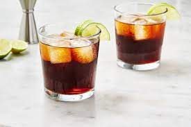

Rum & Coke

Description
Are you hosting a dinner party or just looking for a fun drink to wind down after a long day? This easy rum and coke recipe is light and healthy, allowing you to enjoy without having to feel guilty!
Ingredients
- Coconut Cartel Rum or any of your favorite dark Rums(2 oz)
- Crushed Ice to your liking
- Coke Zero or Diet Coke
- Lime (1 ea)
Steps
- First, start by filling your glass to your liking with crushed ice.
- Pour two ounces of your favorite rum; for this drink, I love using coconut cartel rum.
- Pour to the brim with coke zero or diet coke.
- Stir the drink to incorporate.
- Finally, squeeze one half of the lime into the drink, and cut the other for garnish.
- Enjoy!